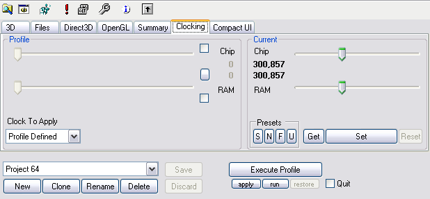

<html>
<title>3DProf - Clocking</html>
<body>


<p>

<h2>Clocking Limits</h2>

<p>All clocking frequencies are limited by the four MHz numbers
configured in Settings Dialog. So if you cannot get a clocking slider
high enough, or you want to limit it to a safe frequencies, change
this settings first.

<p>

<p>

<h2>Changing Current Clocks</h2>

<p>Adjust sliders on the right half of the window. Hit Set button to
apply the changes to the card. Please not, that the actual clock
settings are read back from the card. Not every frequency is possible,
so the real clock may differ from the one you requested.

<p>The Reset button should set the default clock of the card, but
this does not work, because the clocker does not know that clocks.

<h2>Getting Current Clocks</h2>

<p>Current clocks are read from card every time you open the clocking
tab. If an error occurs, it will be ignored.
<p>Another way would be the Get button, which reads the clock and
produces error messages if something goes wrong.

<p>

<h2>Setting Profile Clocks</h2>

<p>In a new profile, the clocking feature is disabled. If the profile
is applied, the current clocks remains unchanged.

<p>The clock settings can be enabled, by checking the boxes near the
sliders in the left side of the window

<p>After that, choose the desired clock speed using the sliders. A hit
on the Apply button would now set the current clocks according to the
profile.

<p>Like always, when a profile was changed: Hitting the Save button
will save the changed profiles into the config file. This must be
done, before starting the profile via a shell shortcut, or the
shortcut will not notice the change.


</body>
</html>